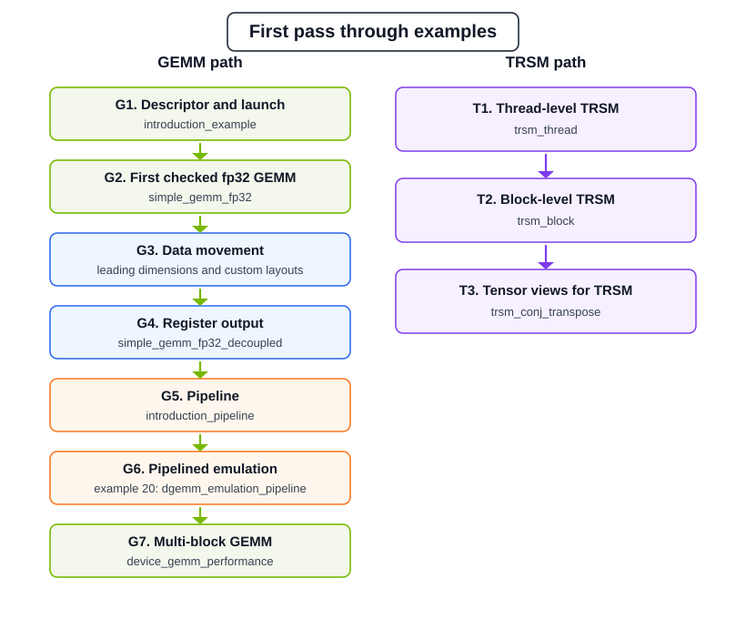

Learning Path Through Examples#
This chapter gives a recommended path through the cuBLASDx examples. It is written for readers who want to learn the library by building and modifying working examples, not by reading the API reference front to back.
The examples live under example/cublasdx. When built from the repository,
executables are written under build/example/cublasdx/<example-dir>/<example>.
Most correctness examples print Success or Failure. Performance examples
print timings, throughput, and error measurements.
Before You Start#
Configure the examples for the GPU architecture you plan to run on. The default configuration targets SM80; if your runtime GPU is different, pass the matching architecture explicitly.
cmake -S . -B build -DBUILD_EXAMPLE=ON -DCUBLASDX_CUDA_ARCHITECTURES=80-real
cmake --build build --target cublasdx_examples -j
Then run examples directly from their output directories. For example:
./build/example/cublasdx/01_gemm_introduction/introduction_example
./build/example/cublasdx/02_gemm_precisions/simple_gemm_fp32
To build one example instead of the aggregate target, use its CMake target name. For examples whose directory and file name would otherwise repeat the same words, the target keeps the numeric prefix and drops the duplicate part:
cmake --build build --target 11_gemm_device_performance
Some examples are conditional:
GEMM batched tensor examples and emulation examples require CUDA Toolkit 13.1 or newer.
TRSM examples require cuBLASDx fatbin/LTO support and may be disabled when fatbin linking is skipped.
cuBLASDx/cuFFTDx examples require cuFFTDx to be enabled and found.
NVRTC examples are built as executables, but their CTest registration is skipped for NVHPC/NVC++.
Recommended First Pass#
Use this path when you are new to cuBLASDx or when you want a quick sanity check before modifying examples. Pick the track that matches the routine you plan to use, run one example, inspect the source while the output is still fresh, then move to the next step in that track.

The first pass has two tracks. Both tracks assume you understand cuBLASDx
operators and descriptor composition. If you are new to the operator model, run
introduction_example and read Operators before starting the
TRSM path.
GEMM path |
TRSM path |
|---|---|
|
|
GEMM Path#
G1. Descriptor and launch
Run:
./build/example/cublasdx/01_gemm_introduction/introduction_example
Source file:
example/cublasdx/01_gemm_introduction/introduction_example.cu
Focus on how the GEMM descriptor is composed from Size, Precision,
Arrangement, Function, SM, and Block. This example also shows
the three GEMM execution styles used throughout the docs: shared-memory output,
explicit register accumulation, and return-value register accumulation.
Next read Using cuBLASDx GEMM.
G2. First checked fp32 GEMM
Run:
./build/example/cublasdx/02_gemm_precisions/simple_gemm_fp32
Source file:
example/cublasdx/02_gemm_precisions/simple_gemm_fp32.cu
Focus on the complete shape of a small correctness example: allocation,
shared-memory slicing, launch attributes, reference comparison, and
Success / Failure reporting. This is the best first GEMM file to modify.
Try changing m, n, and k before changing precision or layout.
G3. Data movement basics
Run:
./build/example/cublasdx/06_gemm_leading_dimension/simple_gemm_leading_dimensions
Source file:
example/cublasdx/06_gemm_leading_dimension/simple_gemm_leading_dimensions.cu
Focus on how leading dimensions change tensor layouts and shared-memory slicing. Read this before using padded, strided, or non-compact matrix storage.
Compare with:
example/cublasdx/09_gemm_custom_layout/simple_gemm_custom_layout.cu
G4. Register output path
Run:
./build/example/cublasdx/08_gemm_decoupled_io_and_compute/simple_gemm_fp32_decoupled
Source file:
example/cublasdx/08_gemm_decoupled_io_and_compute/simple_gemm_fp32_decoupled.cu
Focus on the split between data movement and computation: A/B are staged, GEMM produces a register accumulator, and output conversion/storage happens separately.
Next read GEMM Execution Methods.
G5. First pipeline
Run:
./build/example/cublasdx/01_gemm_introduction/introduction_pipeline
Source file:
example/cublasdx/01_gemm_introduction/introduction_pipeline.cu
Focus on what moves to host setup: global tensor descriptors, pipeline creation, device handle extraction, dynamic shared-memory sizing, asynchronous load and compute stage overlap, and the final epilogue.
Next read Using Pipelined GEMM.
G6. Pipelined emulation
Run:
./build/example/cublasdx/20_dgemm_emulation_pipeline/dgemm_emulation_pipeline
Source file:
example/cublasdx/20_dgemm_emulation_pipeline/dgemm_emulation_pipeline.cu
Focus on how required mantissa bits control Ozaki-style emulation, how the pipeline is created for sliced inputs, and where reusable accumulators are finished before the emulated result is checked. This step requires CUDA Toolkit 13.1 or newer.
Next read Emulation Examples.
G7. Multi-block GEMM
Run:
./build/example/cublasdx/11_gemm_device_performance/device_gemm_performance
Source file:
example/cublasdx/11_gemm_device_performance/device_gemm_performance.cu
Focus on how a full-device GEMM is assembled from cuBLASDx block tiles, how global dimensions are passed as runtime values, and how the example compares against a library reference path.
Next read GEMM Performance.
TRSM Path#
T1. Thread-level TRSM
Run:
./build/example/cublasdx/17_trsm/trsm_thread
Source file:
example/cublasdx/17_trsm/trsm_thread.cu
Focus on the smallest TRSM execution model: each CUDA thread solves one
independent triangular system directly from global memory using the Thread()
execution operator.
Next read Using cuBLASDx TRSM, then the TRSM-specific operators.
T2. Block-level TRSM
Run:
./build/example/cublasdx/17_trsm/trsm_block
Source file:
example/cublasdx/17_trsm/trsm_block.cu
Focus on cooperative TRSM through shared memory: Side, FillMode,
Diag, BatchesPerBlock, shared-memory slicing, and the in-place
B -> X result. For custom leading dimensions or TRSM batch strides, read
Get Memory Layout after this example.
Next read TRSM Execution Methods.
T3. Tensor views for TRSM
Run:
./build/example/cublasdx/18_tensor_transform/trsm_conj_transpose
Source file:
example/cublasdx/18_tensor_transform/trsm_conj_transpose.cu
Focus on applying conj_transpose_view at execute time so TRSM can solve
against a transposed or conjugate-transposed triangular matrix without changing
storage. Arrangement still describes memory layout; the tensor view changes
what FillMode means at the call site.
Next read Tensor Views And Conjugate Transpose.
Choose Examples By Goal#
Basic GEMM Concepts#
Example |
Use it when you want to learn |
Useful follow-up |
|---|---|---|
|
Descriptor composition and the three main GEMM execution styles: shared-memory output, register accumulation into existing C, and register return value. |
|
|
A small, direct, correctness-checked GEMM that is easier to modify than performance examples. |
|
|
Element-wise load/store transforms around GEMM and how transform work relates to register accumulators. |
|
Precision And Data Types#
Example |
Use it when you want to learn |
Notes |
|---|---|---|
|
How computation precision, storage type, complex type, and scalar type interact. |
Good first stop before custom input/output types. |
|
Integral GEMM and promoted accumulation. |
Check supported SMs before modifying. |
|
FP8 A/B inputs and higher-precision accumulation/output. |
Requires an FP8-capable architecture. |
|
Complex half-precision GEMM. |
Compare with |
|
Using |
Useful when integrating with C++ code that already uses standard complex types. |
Pipelining And Batching#
Example |
Use it when you want to learn |
Notes |
|---|---|---|
|
Basic pipelined GEMM setup: host pipeline object, device handle, tile selection, pipeline block dimensions, asynchronous load and compute stages, and execution. |
Read before modifying performance examples. |
|
Rank-3 batched tensors, batch tile coordinates, and |
Requires CUDA Toolkit 13.1 or newer. |
|
Non-pipelined batched GEMM using tensor interfaces. |
Compare directly with |
|
Manual batching inside one CUDA block using |
Older style; useful for understanding thread/block ownership. |
Performance And Fusion#
Example |
Use it when you want to learn |
Notes |
|---|---|---|
|
Block-level GEMM timing for one GEMM tile configuration. |
Build in Release mode for meaningful numbers. |
|
Full-device GEMM assembled from cuBLASDx tiles and compared with a library reference path. |
Command-line |
|
Splitting accumulation into partial sums to trade performance and accuracy. |
Treat as an advanced accuracy/performance example. |
|
Fusing two dependent GEMMs in one CUDA kernel. |
Study shared-memory reuse and synchronization. |
|
Timing fused GEMMs against an unfused reference path. |
Build in Release mode. |
|
How launch dimensions and BLAS participating block dimensions interact. |
Useful before writing non-standard block layouts. |
TRSM#
Example |
Use it when you want to learn |
Notes |
|---|---|---|
|
Block-level triangular solve through shared memory. |
Start here for TRSM. |
|
One thread solving one TRSM instance. |
Good for many small independent solves. |
|
Applying |
Read after |
Specialized And Optional Examples#
Example |
Use it when you want to learn |
Notes |
|---|---|---|
|
Runtime compilation with NVRTC and passing cuBLASDx headers into device source compiled at runtime. |
Useful for generated kernels. Source:
|
|
Runtime compilation with NVRTC for a block-level triangular solve. |
|
|
Ozaki-style double precision emulation using lower precision GEMM operations. |
Requires CUDA Toolkit 13.1 or newer. |
|
Pipelined emulation controlled by required mantissa bits. |
Requires CUDA Toolkit 13.1 or newer. |
|
Single precision emulation pipeline using the same mechanism as the double precision pipeline example. |
Requires CUDA Toolkit 13.1 or newer. |
|
GEMM followed by FFT in one kernel using cuBLASDx and cuFFTDx. |
Optional; requires cuFFTDx. |
|
Half-precision complex FFT/GEMM fusion. |
Optional; requires cuFFTDx. |
|
Timing GEMM+FFT fusion. |
Optional; requires cuFFTDx and Release mode for useful timings. |
Suggested Modification Order#
When adapting examples to your own kernel, change one layer at a time:
Change
m,n,kand rebuild.Change
PrecisionandType.Change
Arrangementor leading dimensions.Change shared-memory layouts.
Move from shared-memory output to register-fragment output.
Add pipelining only after the non-pipelined version is correct.
Add fusion after each individual operation has a checked standalone example.
If a modified example fails, first check that the binary was built for the GPU SM you are running on, then check shared-memory size, launch block dimensions, alignment, and any tile divisibility requirements.
Adaptation Checklists#
Before changing a GEMM example, verify:
The descriptor has exactly one
Size,Precision,Type,Function, andSMoperator.Arrangementor any explicit leading dimensions match the memory allocation and reference path.Alignmentmatches pointer alignment and leading dimensions.Dynamic shared memory uses
get_shared_storage_sizefor shared-memoryCandget_shared_storage_size_abfor register-accumulatorC.Every asynchronous global/shared copy is followed by
copy_wait()before the copied data is read.The modified example still compares against a reference result before returning success.
Before changing a pipelined GEMM example, verify:
global_mandglobal_nare divisible bytile_mandtile_n, or the kernel has explicit edge handling.global_k / tile_kis at least the chosen pipeline depth, so staged asynchronous loads and staged asynchronous compute both have valid K tiles.The launch uses
pipeline->get_block_dim()unless the pipeline is created withfixed_blocksize.The device handle is passed as
__grid_constant__when following the standard pipeline examples.One
tile_pipelineobject is constructed per kernel execution, reused withreset_tilefor persistent work, and destroyed once.Reusable accumulators call
finish_accumulation()with the same thread scope astile_pipeline.execute(accumulator)before reading results unlesstile_pipeline.epilogueis used; do not guard the call withif(accumulator.is_thread_active())because internal warp-specialization may require broader participation.
Before changing a TRSM example, verify:
The build links the cuBLASDx fatbin/LTO target;
cublasdx_no_ltois GEMM-only.Size<M, N>describesBandX.AisM x Mfor left-side andN x Nfor right-side.Arrangementdescribes storage, while tensor views can change whatFillModemeans atexecute().num_batchesis padded or otherwise divisible byBatchesPerBlockfor block-level TRSM.Bis treated as input/output: restore it before repeated timing runs.The example fails when the reference error is not acceptable.
Before changing emulation examples, verify:
The build uses CUDA Toolkit 13.1 or newer.
RequiredMantissaBitsis set deliberately and the measured error is inspected.Pipelined emulation uses
reusable_accumulatorwhere required by the algorithm.